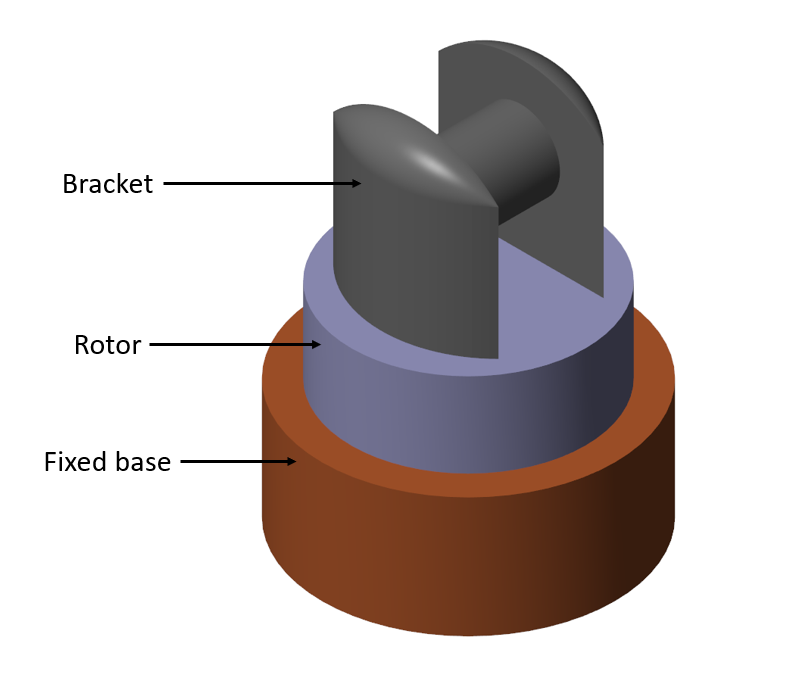
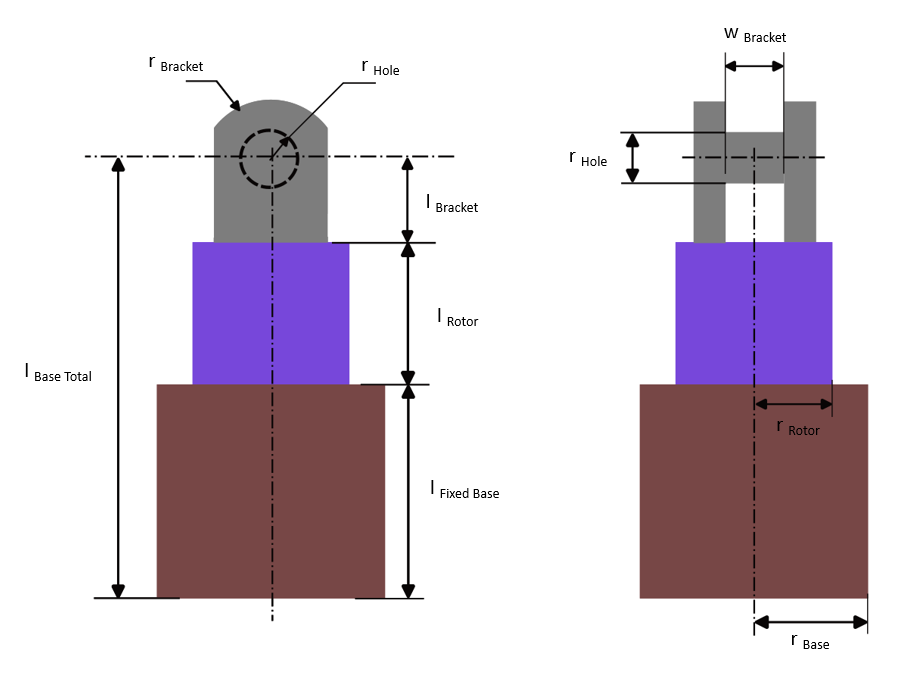

Robot Rotating Base With Bracket
Robot rotating base with bracket or
simply, the Rotating Base With Bracket block models the base of a
manipulator robot. A rotating base with bracket is a rigid body that
consists of a fixed base, a rotor and a bracket mounted on the rotor.
Connect the rotor to the fixed base using a Revolute Joint.

Ports
B - Base Frame
Body frame located at the centroid of the bottom surface of the fixed base. Use this frame to connect to the World Frame.
F - Follower Frame
Body frame located at the centroid of the bracket. Use this frame to connect other components, such as joints.
B - Joint Base Frame
Body frame located at the centroid of the top surface of the fixed base. Use this frame to connect to a Revolute Joint.
B - Joint Follower Frame
Body frame located at the centroid of the bottom surface of the rotor. Use this frame to connect to a Revolute Joint.
Parameters
Bracket configuration
The configuration of the bracket, specified as Single bracket and Double bracket with pin.
Connect the bracket of the rotating base to the bracket of a link
using a Revolute Joint in between. You can connect the
Single bracket of the rotating base to a
Double bracket with pin of a link or you can connect the
Double bracket with pin of the rotating base to a
Single bracket of a link.
Geometry
Fixed base radius
Radius of
the cylinder that constitutes the fixed base.
Some internal parameters of the link depend on the Fixed base radius.
The parameters are calculated as following:
r Rotor = 0.8*r Base
l Bracket = (0.8*r Base/2)*1.5
w Bracket = 0.9*0.8*r Base
r Hole = (0.8*r Base)/3
r Bracket = 0.8*r Base
where,
r Base is the radius of the cylinder that constitutes the fixed base.
r Rotor is the radius of the cylinder that constitutes the rotor.
l Bracket is the distance of the center of hole (for Single bracket) or center of pin (for Double bracket with pin) from the base of the bracket.
w Bracket is the distance between two single brackets of a Double bracket with pin. It is also the pin length of a Double bracket with pin.
r Hole is the radius of the hole (for Single bracket) or of the pin (for Double bracket with pin).
r Bracket is the radius of the curvature of the bracket.
Base total length
Distance
between the bottom surface of the fixed base and the center of hole
(for Single bracket) or center of pin (for Double
bracket with pin) of the bracket, measured in the direction
perpendicular to the bottom surface of the fixed base.
The Fixed base length and the Rotor length depends on the Base total length.
The parameters are calculated as following:
baseLength = (baseTotalLength - bracketLength)/1.7;
rotorLength = 0.7*baseLength;
l Fixed Base = (l Base Total - l Bracket)/1.7
l Rotor = 0.7*l Fixed Base
where, l Base Total is the base total length.
l Fixed Base is the length of the cylinder that constitutes the fixed base.
l Rotor is the length of the cylinder that constitutes the rotor.
l Bracket is the distance of the center of hole (for Single bracket) or center of pin (for Double bracket with pin) from the base of the bracket.
Below is the schematic of a rotating base with with double bracket.

Inertia
Fixed base
Inertia type
Inertia type, specified as Custom or Calculate from Geometry. Select Custom to model a distributed mass with the specified moments and products of inertia. Select Calculate from Geometry to enable the block to automatically calculate the rotational inertia properties from the solid geometry and specified mass density of the fixed base.
Density
Material density of the fixed base, specified as a positive scalar. The unit is kg/m^3.
Mass
Total mass of the fixed base, specified as a positive scalar. The unit is kg.
Center of mass
[x y z] coordinates of the center of mass of the fixed base relative to the body frame located at the centroid of the bottom surface of the Fixed Base.
Moments of inertia
Three-element vector with the [Ixx Iyy Izz]
moments of inertia specified relative to a frame with origin at the
center of mass and axes parallel to the body frame
located at the centroid of the bottom surface of the Fixed Base.
The moments of inertia are the diagonal elements of the inertia tensor
where:
Ixx = ∫m (y2 + z2)dm
Iyy = ∫m (x2 + z2)dm
Izz = ∫m (x2 + y2)dm
Products of inertia
Three-element vector with the [Iyz Izx Ixy]
products of inertia specified relative to a frame with origin at the
center of mass and axes parallel to the body frame
located at the centroid of the bottom surface of the Fixed Base.
The products of inertia are the off-diagonal elements of the inertia tensor
where:
Iyz = - ∫m yz dm
Izx = - ∫m zx dm
Ixy = - ∫m xy dm
Rotor
Inertia type
Inertia type, specified as Custom or Calculate from Geometry. Select Custom to model a distributed mass with the specified moments and products of inertia. Select Calculate from Geometry to enable the block to automatically calculate the rotational inertia properties from the solid geometry and specified mass density of the rotor.
Density
Material density of the rotor, specified as a positive scalar. The unit is kg/m^3.
Mass
Total mass of the rotor, specified as a positive scalar. The unit is kg.
Center of mass
[x y z] coordinates of the center of mass of the rotor relative to the body frame located at the centroid of the bottom surface of the Rotor.
Moments of inertia
Three-element vector with the [Ixx Iyy Izz]
moments of inertia specified relative to a frame with origin at the
center of mass and axes parallel to the body frame
located at the centroid of the bottom surface of the Rotor.
The moments of inertia are the diagonal elements of the inertia tensor
where:
Ixx = ∫m (y2 + z2)dm
Iyy = ∫m (x2 + z2)dm
Izz = ∫m (x2 + y2)dm
Products of inertia
Three-element vector with the [Iyz Izx Ixy]
products of inertia specified relative to a frame with origin at the
center of mass and axes parallel to the body frame
located at the centroid of the bottom surface of the Rotor.
The products of inertia are the off-diagonal elements of the inertia tensor
where:
Iyz = - ∫m yz dm
Izx = - ∫m zx dm
Ixy = - ∫m xy dm
Graphic
Fixed base color
Color of the Fixed Base graphic under direct white light, specified as an [R G B] or [R G B A] vector on a 0–1 scale. An optional fourth element (A) specifies the color opacity on a scale of 0–1. Omitting the opacity element is equivalent to specifying a value of 1.
Rotor color
Color of the Rotor graphic under direct white light, specified as an [R G B] or [R G B A] vector on a 0–1 scale. An optional fourth element (A) specifies the color opacity on a scale of 0–1. Omitting the opacity element is equivalent to specifying a value of 1.
Copyright 2023 - 2024 The MathWorks, Inc.